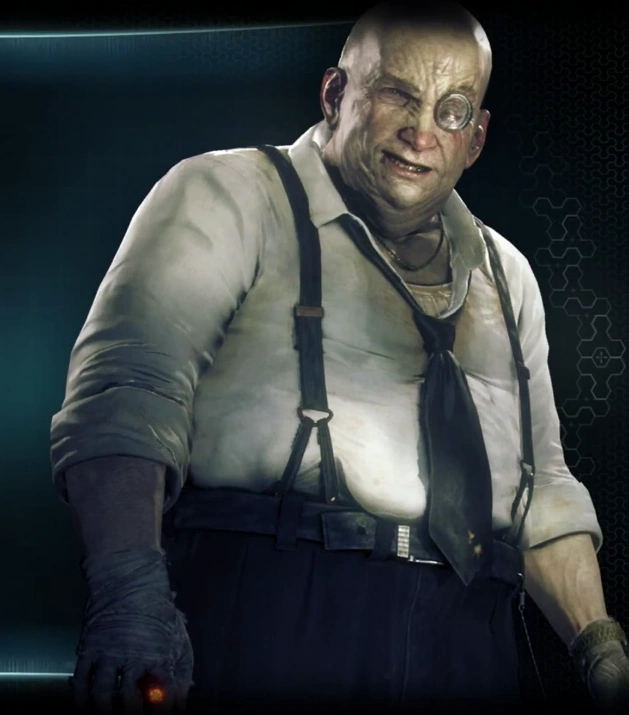

PINGUIM
O Pinguim (Oswald Chesterfield Cobblepot) é um supervilão de Gotham City e um
inimigo do Batman. Ele é frequentemente apresentado como um cavalheiro do crime,
muitas vezes desenvolvendo esquemas elaborados enquanto se apresenta como inocente
de muitas de suas atividades. Um excêntrico gênio do crime, ele é bem conhecido
por seu amor pela ornitologia e uso de guarda-chuvas equipados com tecnologia.
Representações mais modernas o mostram como o gerente do Iceberg Lounge, uma
boate popular que serve como fachada para sua estrutura financeira ilegal.